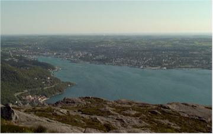
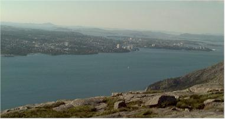
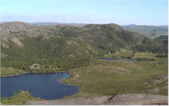
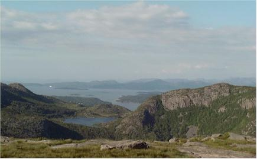
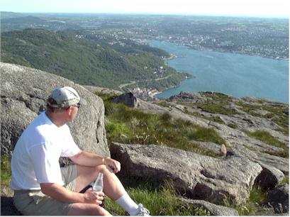
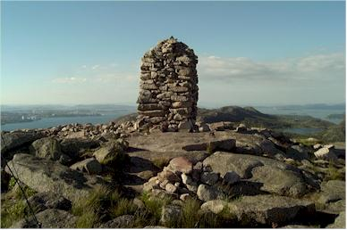
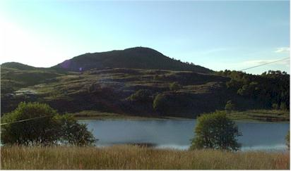
The first of my VIP Volleyball Tournament experiences, good fun!
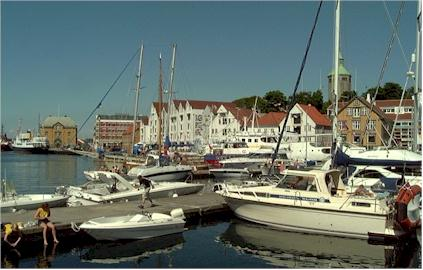
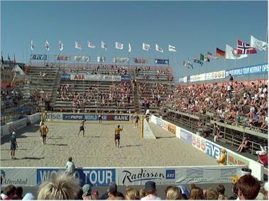
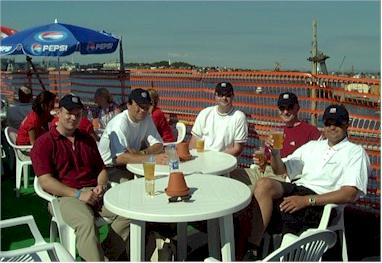
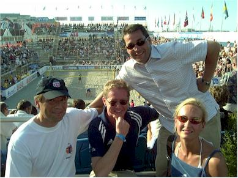
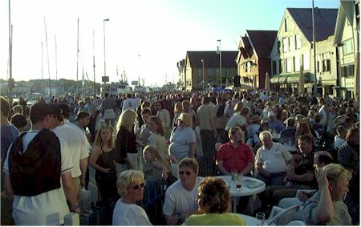

Wednesday, July 4 & Thursday, July 5
Cambodia Index: - 0 - 1 - 2 - 3 - 4 - 5 - 6 - 7 - 8 - 9 - 10 - 11 - 12 - 13 - 14 - 15
I had to work on Independence Day, but I did celebrate in the evening with a nice hike up to Dalsnuten. This is a peak nearby which takes only 45 minutes to hike up and gives you a view of the entire area. My friend Arild Solsback went up with me. It was a great day to be out.
|
 |
|||
| I took this on the way, it's right
near the airport at Sola. The sea was a beautiful color and there were all
these sailboats. Too bad the picture is blurry. |
A view toward Sandness from Dalsnuten. | ||
 |
 |
||
| Toward the Stavanger area |
Back over the lake along the
hiking trail |
||
 |
 |
||
| Toward Tau |
Arild taking in the sights | ||
 |
 |
||
| A big pile of rocks at the very top of Dalsnuten | Looking back on Dalsnuten from the bottom of the trail. You can barely see the big pile of rocks in the outline on top | ||
| Thursday, July 5
The first of my VIP Volleyball Tournament experiences, good fun! |
|||
 |
 |
||
| I took this on the way to the tournament.
Lots of people sit in their boats here, drinking in the booze and the sun,
having a good time. |
A shot of Austria playing Brazil. I never
thought I'd see such a big group of people out baking in the sun in
Norway. It actually does get warm here sometimes!! |
||
 |
 |
||
| My VIP group - nice guys who provide networking
services to Phillips. From left to right is Endre Askildsen, Ole Klingsheim
(from Phillips, he invited me!), Vidar Andersen,
Kjetil Rosnes, and Trygve Hagevik |
My buds - Ole, Ingvar, Kurt, and
Elisabeth. They are a lot of fun to hang out with, they all have
really great attitudes and have taught me a lot about Norway (and Irish
Coffee!) |
||
 |
|
||
| A scene of the crowds at the harbor - get this -
it was 10:00 on a Thursday night. These people celebrate a sunny day
as if it's a holiday. Lucky for me! |
Kurt took this of me in front of the Stavanger
Cathedral. Kurt can tell you a lot about it's architecture - just
ask him! |
||